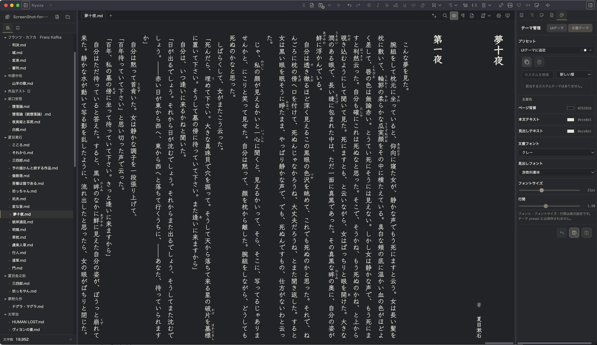
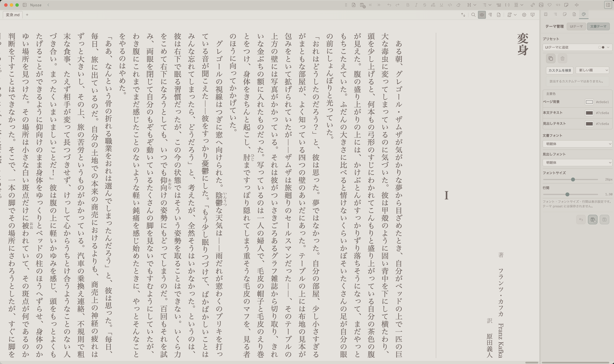
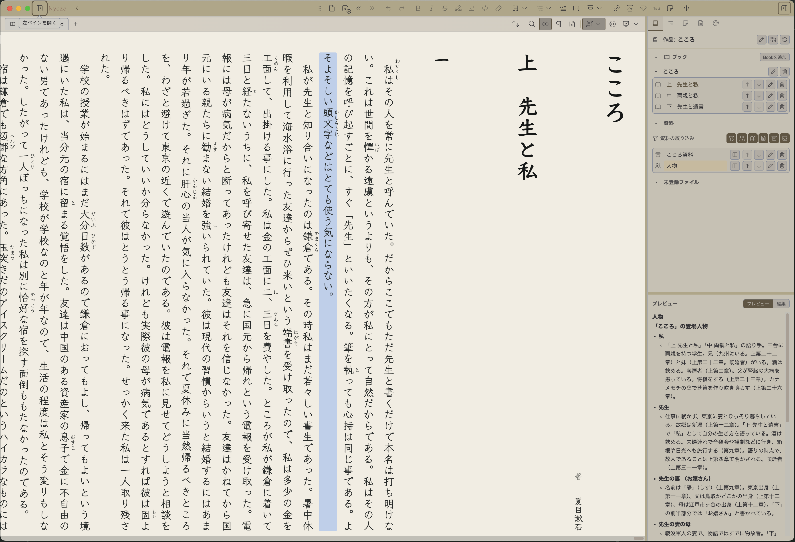
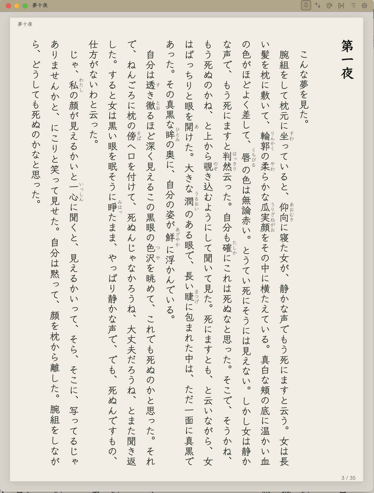
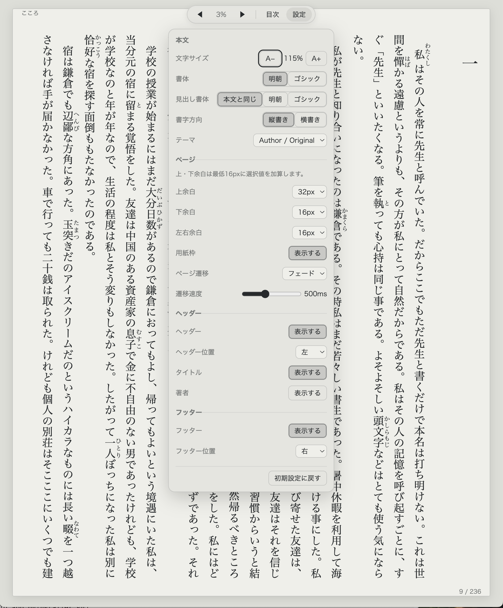
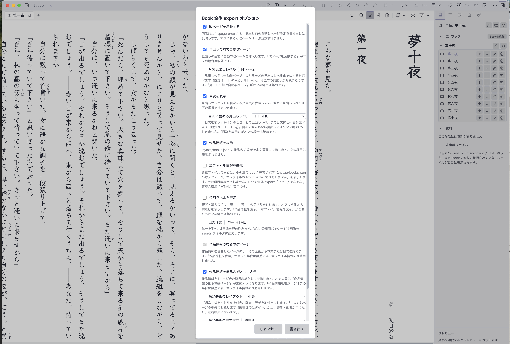

書く
原稿の流れを、止めない。
縦書き・横書きを切り替えながら、見た目に近いまま編集できます。ルビや縦中横、傍点も扱え、Typewriter scroll と Visual Focus が、いま書いている一行に意識を戻します。
必要なときだけ、全文の Source Mode や段落ごとの Paragraph Plain で Markdown を確かめられます。

Vertical writing desktop editor
Nyoze は、小説やエッセイのための縦書き Markdown エディタです。見た目に近い画面で書きながら、原稿・資料・章を一つの作品として整理し、読む人へ届けるところまで支えます。
beta macOS（Apple Silicon / Intel）・Windows x64 最新機能は GitHub プレリリース版で利用できます

A quiet workspace for writing
Markdown を知らなくても、まずはふだんの文書ソフトのように書き始められます。Nyoze は原稿をローカルのテキストファイルとして扱いながら、作品づくりに必要な管理と閲覧の道具を、静かにまとめます。
Workflow
書く
縦書き・横書きを切り替えながら、見た目に近いまま編集できます。ルビや縦中横、傍点も扱え、Typewriter scroll と Visual Focus が、いま書いている一行に意識を戻します。
必要なときだけ、全文の Source Mode や段落ごとの Paragraph Plain で Markdown を確かめられます。

整理する
書庫の中で作品を管理し、Book に章を並べ、Materials に資料を添えられます。Book 全体のアウトラインや前後の章への移動で、長い原稿でも全体のかたちを見失いません。
本文の位置に紐づく付箋には、メモ、色、タグ、解決済みの状態を残せます。

読む
Page Viewer では、現在の文書や Book 全体をページ単位で閲覧できます。縦書き・横書きの読み心地を確かめながら、目次とアウトラインで章や見出しを行き来できます。
改ページや空白ページ、余白、簡易表紙にも対応し、原稿のまとまりを落ち着いて見直せます。

届ける
Web Book では、現在の文書や Book 全体を、読書用の画面を備えた単一 HTML または Web 公開用パッケージとして出力できます。Chrome や Edge からの印刷・PDF 保存にも対応します。
LeME向け Markdown、でんでんコンバーター向け Markdown、青空文庫風テキストにも書き出せます。


Download
どちらも beta 版です。新しい制作フローを試す場合は GitHub プレリリース版を、Microsoft Store 経由で導入したい場合は Store 版を選べます。
Support & documentation
導入方法、既知の制限、操作の詳細はドキュメントで確認できます。気づいたことは、バグ報告やフィードバックからお知らせください。